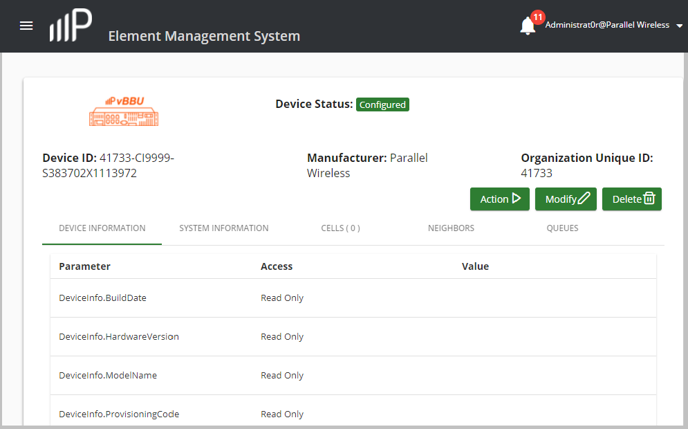

View and Manage vBBU Configuration Details
Use this task to view configuration information about the vBBU server, and manage high-level vBBU server-related parameters.
-
Use any of the following ways to access the Device Summary window:
- Log into the PW EMS, this window displays by default.
- From the navigation bar, click Dashboard.
- From the navigation bar, click Devices > Device Summary.
- In the Device Summary window, select the vBBU row.
-
Click the Actions column button
 .
.
-
In the pop-up menu that appears, click vBBU > Config Details
as shown below.

-
The Device Status window displays whether the vBBU is configured and
provides its device and system information. For example:

- Click Action.
- In the Perform Action on Device window select Action from the Select Command Type drop-down list.
-
Select from the following Select Action Command drop-down list
actions:
Field
Description
Request Log Records from Access Nodes Sends all logs from access devices to the PW EMS. Request PWS Csv Upload Logs from Access Nodes Sends all Public Warning System (PWS) logs from HNG node to the PW EMS. Reboot Access Node Device Reboots all vNodes and their respective cells that are associated with this vBBU. Reboot System Access Node Device Reboots all vNodes that are associated with this vBBU. -
Select Show from the Select Command Type drop-down list and
select from the following Select Show Command drop-down list
actions:
Field
Description
Show PKI Certificates Displays applicable access device PKI certificates. Show RF Signal Path Displays the E-UTRA Transmit and Receive RF signal paths. Show RF Port Displays RF ports on the access device. -
Click the back button on your Web browser to return to the Device Status
window and click Modify to change existing vBBU system and HNG node
Information. In the System Information tab (which displays by default),
the following vBBU system fields can be modified as described in the table
below:
Field
Description
Version Displays the version of the vBBU device. Device Name The default name of the vBBU device is a number such as 41733-C19999-S392384X9B21815. This number can be changed to a conventional name. For example: vBBU_Dallas Heartbeat > Ping Interval The default value is 60 seconds for heartbeat pings to the vBBU. You can set a new value from 3 to 3,600 seconds. Heartbeat > Max Retry The default number of heartbeat ping retry intervals are 4. You can set a new value from 1 to 20 ping retries. Statistics Intervals > LTE Sampling Frequency The default interval for LTE sampling of frequency is once every 15 minutes. You can set a new value from 0 to 60 minutes. Statistics Intervals > Resources Sampling Frequency The default interval for bandwidth resource sampling is once every 15 minutes. You can set a new value from 0 to 60 minutes. Statistics Intervals > Network Sampling Frequency The default interval for network sampling of frequency is once every 15 minutes. You can set a new value from 0 to 60 minutes. Statistics Intervals > UMTS Sampling Frequency The default interval for Universal Mobile Telecommunications System (UMTS) sampling of frequency is once every 15 minutes. You can set a new value from 0 to 60 minutes. Statistics Intervals > GSM Sampling Frequency The default interval for Global System for Mobile Communication (GSM) sampling of frequency is once every 15 minutes. You can set a new value from 0 to 60 minutes. NOTE: Other fields listed in this window cannot be modified. -
Click the HNG Information tab. The following Downlink Profiles
can be selected for the vBBU:
Field
Description
DownlinkQoS Select the downlink QoS profile that was configured for this vBBU for the Differentiated Services Code Point (DSCP) to be applied to data traffic from the HNG to access network devices, such as the RRH. Refer to the Configure Downlink QoS section for more information about configuring this profile. DownlinkShaping Select the downlink QoS shaping profile that was configured for this vBBU for the DSCP to be applied to data traffic towards access devices such as an RRH from the HNG. Refer to the Configure Downlink QoS Shapping section for more information about configuring this profile. Downlink Bandwidth The default downlink bandwidth for the vBBU is one minute. You can enter a new value from 1 to 2000 minutes. - Click SUBMIT to finish modifying the vBBU system parameters.